Welcome to the Accessory Zone
Discover exclusive
fashion accessories—from elegant earrings to stylish shoes!
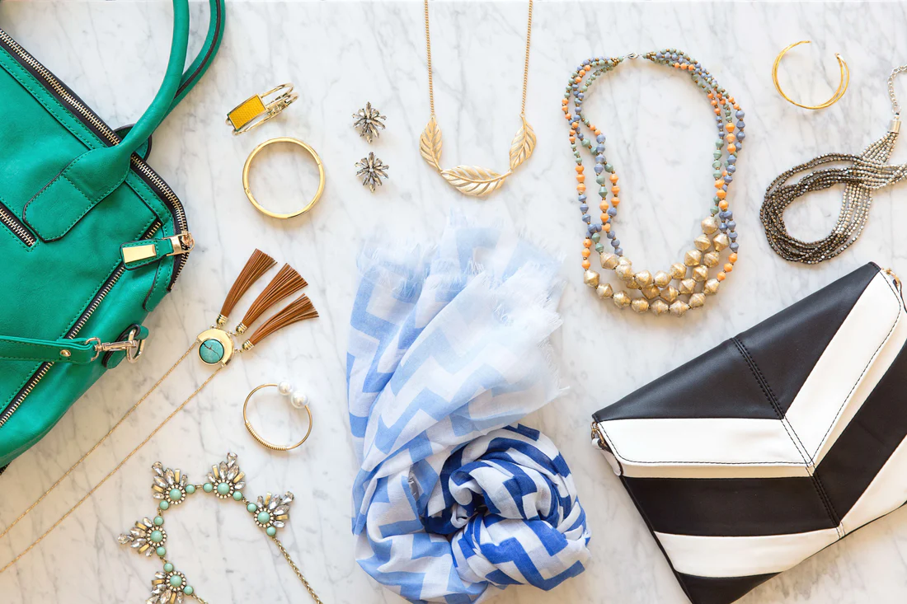
Necklaces
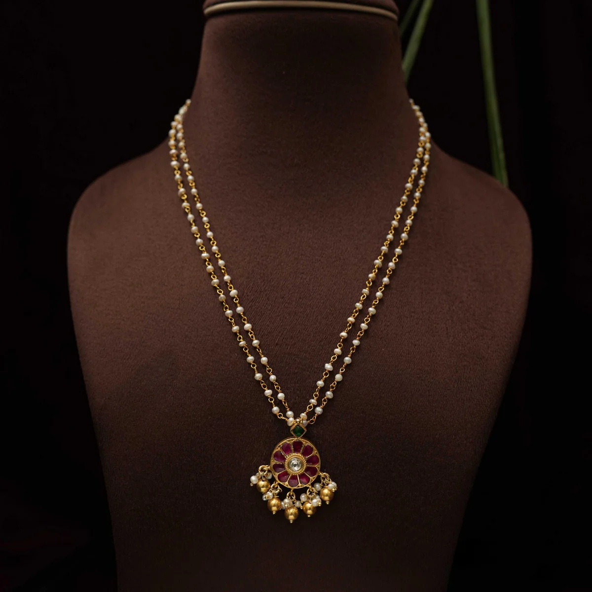
Pearl Strand
- Timeless Elegance: Symbolic of purity, wisdom, sophistication.
- Versatile Styles: Uniform or graduated strands—from chokers to ropes.
- Investment & Meaning: Heirloom quality; value appreciation.
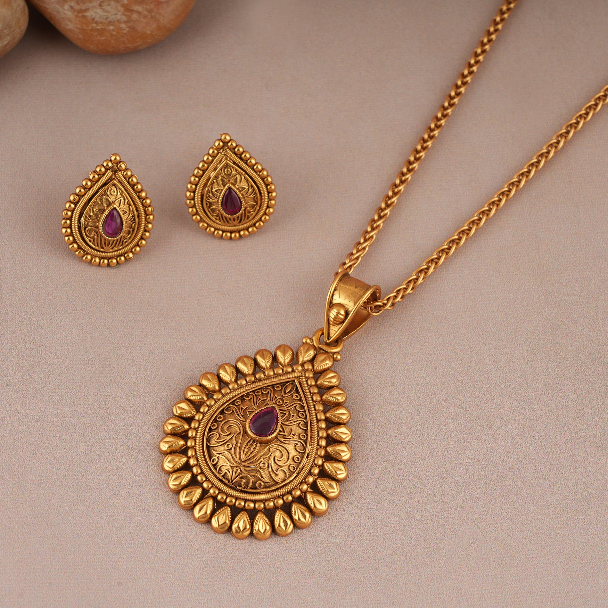
Gold Pendant
- Symbol of Personal Identity: A gold name necklace bears the wearer’s name or initials
- Sentimental & Heritage Value: Gold pendants often carry memories—photos, family symbols.
- Spiritual & Cultural Resonance: Many designs—like crosses, elephants.
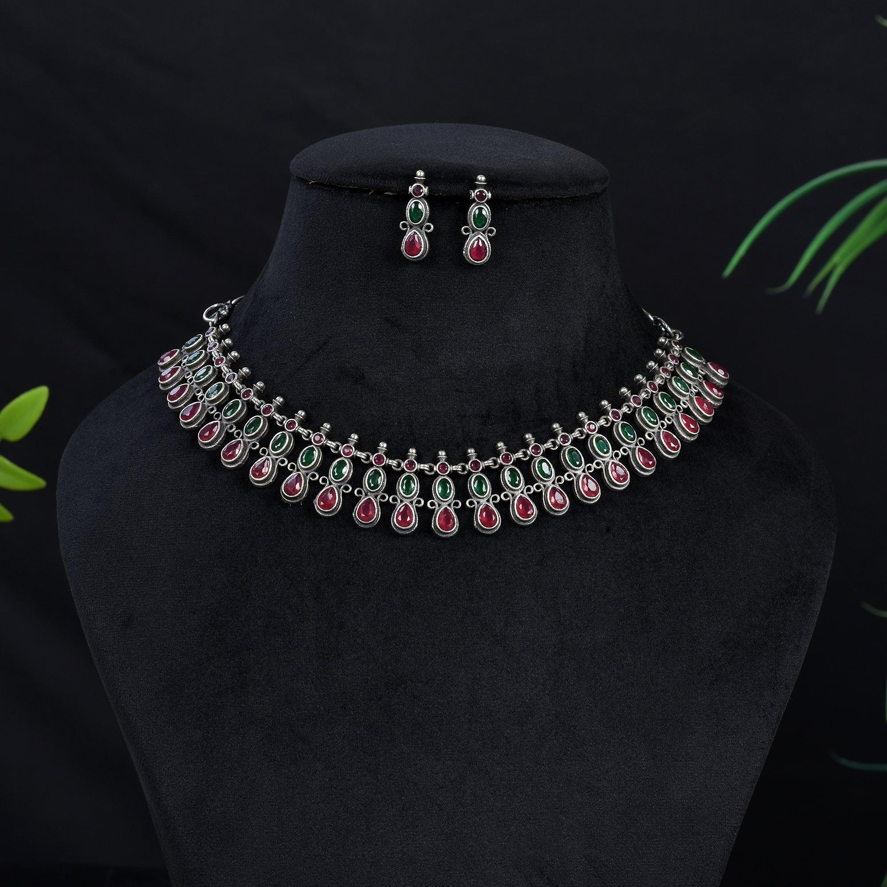
Silver Choker
- Statement of Modern Elegance: A silver choker adds a sleek, contemporary touch to any outfit, making it a fashion-forward choice.
- Versatile Styling Piece: Pairs well with both casual and formal wear, often layered or worn solo for minimal elegance.
- Cultural & Symbolic Appeal: Often adorned with charms, tribal patterns, or spiritual motifs like moons and stars.
Bangles
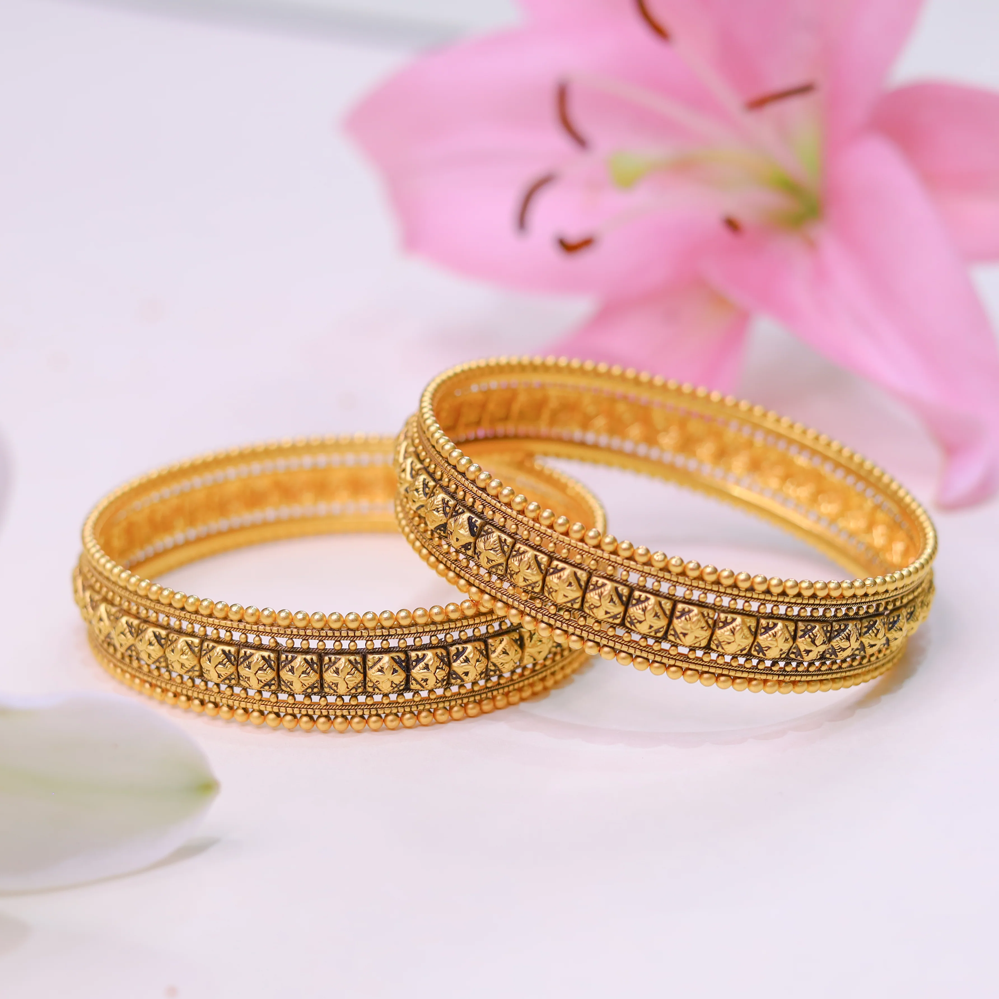
Gold Bangle
- Expression of Tradition & Grace: Gold bangles are timeless ornaments, deeply rooted in cultural and traditional ceremonies.
- Symbol of Prosperity: Often gifted during weddings and festivals, they signify wealth, blessings, and good fortune.
- Everyday Elegance: Whether plain or intricately designed, gold bangles add a refined touch to daily attire.
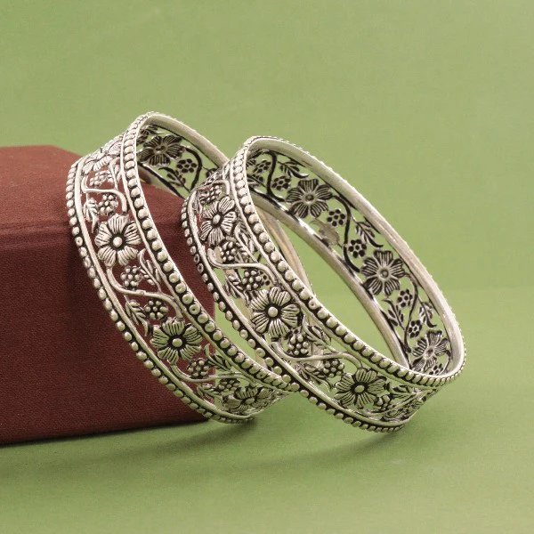
Silver Bangle
- Minimalist Charm: Silver bangles offer a sleek and subtle elegance, perfect for modern, everyday style.
- Affordable Sophistication: A popular choice for those seeking grace without extravagance, blending style and simplicity.
- Symbolic & Artistic Appeal: Often crafted with engraved patterns, tribal motifs, or oxidized finishes reflecting cultural artistry.
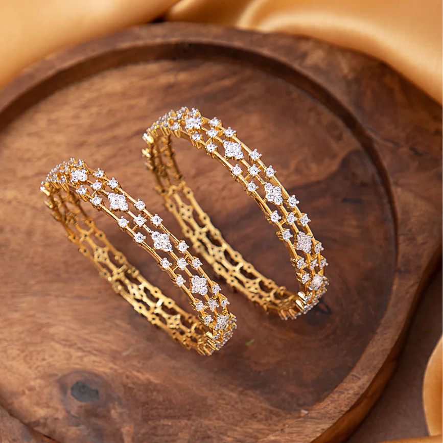
Diamond Bangle
- Symbol of Luxury & Status: Diamond bangles exude opulence, often worn as a mark of elegance and prestige.
- Timeless Sparkle: Their brilliant shine adds a touch of glamour to both everyday wear and special occasions.
- Emotional Significance: Often chosen for milestones like anniversaries or achievements, symbolizing enduring love and success.
Bags
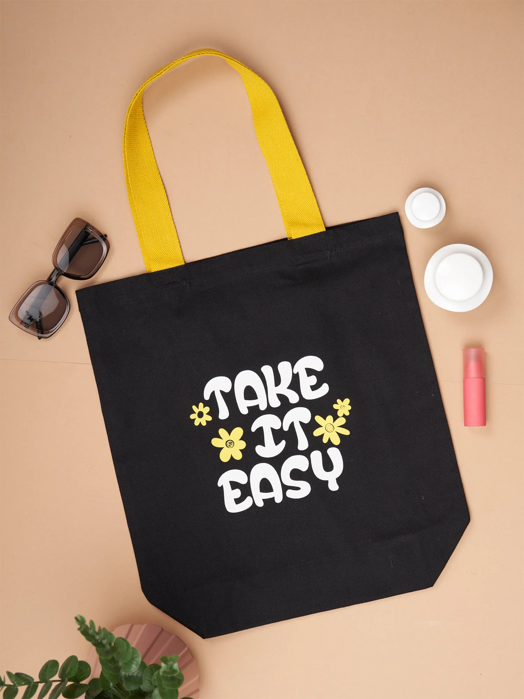
Tote Bag
- Functional Fashion: Tote bags blend practicality with style, offering ample space for everyday essentials.
- Versatile Companion: Ideal for work, travel, shopping, or casual outings—tote bags adapt to every lifestyle.
- Statement of Personality: Available in various designs, materials, and prints, they reflect the user's unique taste and values.
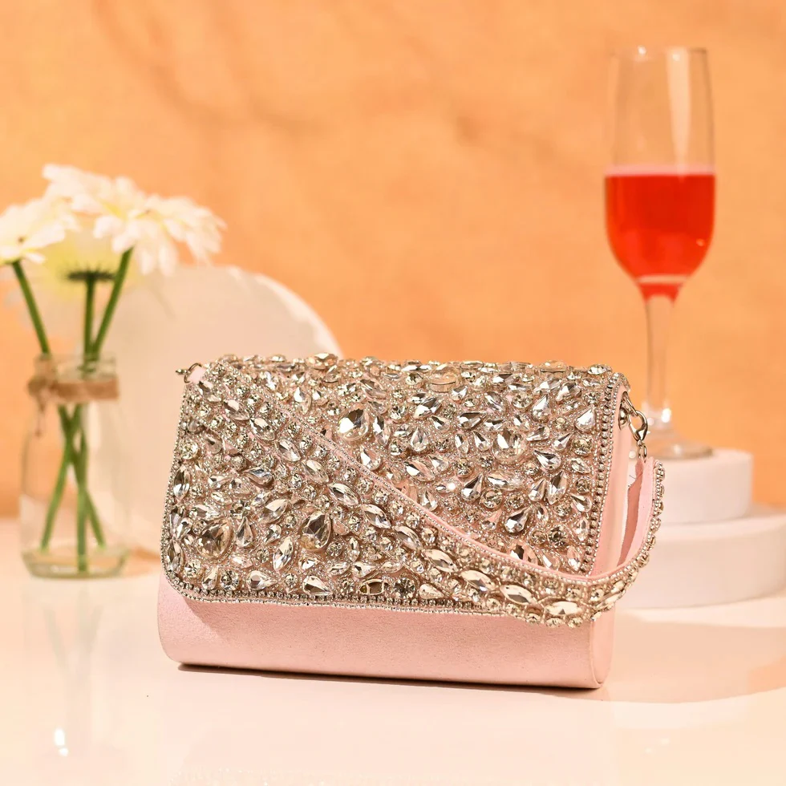
Clutch
- Elegant Minimalism: Clutches offer a sleek and compact way to carry essentials, perfect for formal events or evening outings.
- Chic Statement Piece: Often designed with eye-catching details like embellishments, textures, or metallic finishes.
- Perfect for Special Occasions: Complements party wear, bridal looks, or festive attire with sophistication and charm.

Backpack
- Comfort Meets Utility: Backpacks are designed for balanced weight distribution, making them ideal for everyday use, travel, or school.
- Spacious & Organized: Multiple compartments help keep essentials neatly arranged—from gadgets to notebooks and more.
- Style for Every Need: Available in sporty, casual, and premium designs to match personal taste and lifestyle.
Shoes
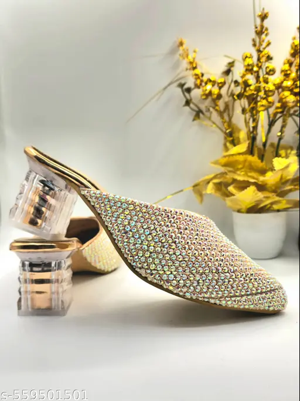
Stylish Heels
- Boost of Confidence: Stylish heels elevate not just height but also posture and poise, adding a bold touch to any outfit.
- Fashion Forward: From classic pumps to trendy stilettos, heels come in diverse styles to suit every occasion and personality.
- Elegance in Every Step: Perfect for parties, weddings, or workwear, heels effortlessly blend glamour with grace.
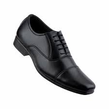
Formal Shoes
- Polished Professionalism: Formal shoes enhance your overall appearance, making them ideal for business meetings, office wear, and formal events.
- Timeless Appeal: Available in classic styles like oxfords, loafers, or derbies, they complement both traditional and modern wardrobes.
- Crafted for Comfort & Class: Designed with quality materials and sleek finishes, formal shoes balance elegance with all-day comfort.

sneakers shoes
- All-Day Comfort: Sneakers are designed with cushioned soles and breathable materials, perfect for active and casual wear.
- Trendy & Sporty Style: From classic white kicks to bold statement designs, sneakers suit streetwear, travel, and everyday looks.
- Versatile Footwear Choice: Ideal for everything from workouts to outings, sneakers blend functionality with fashion effortlessly.
See the full size conversion chart below.
Shoe Size Conversion Chart
Women's Shoe Sizes
| US |
UK |
EU |
| 6 | 5 | 39 |
| 7 | 6 | 40 |
| 8 | 7 | 41 |
| *Sizes may vary depending on brand* |